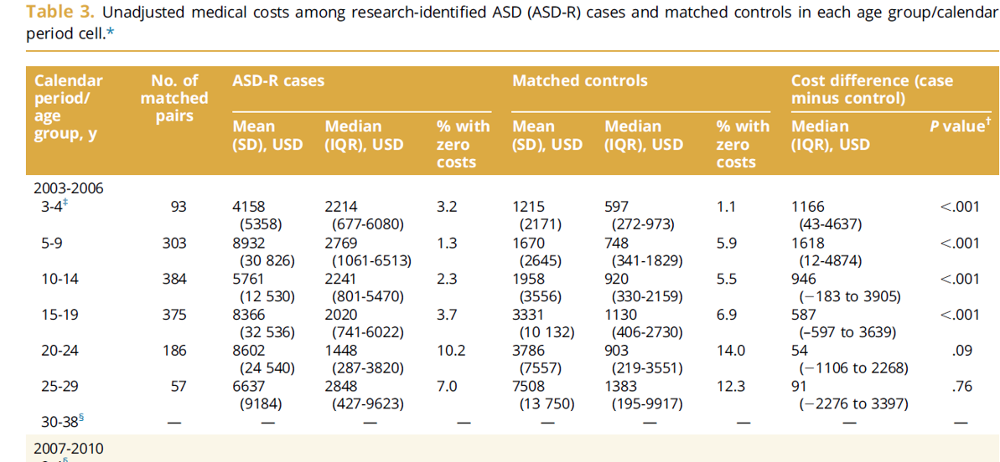
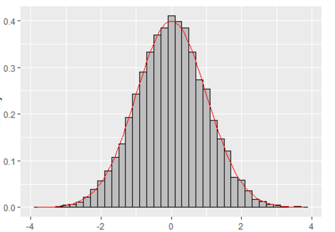
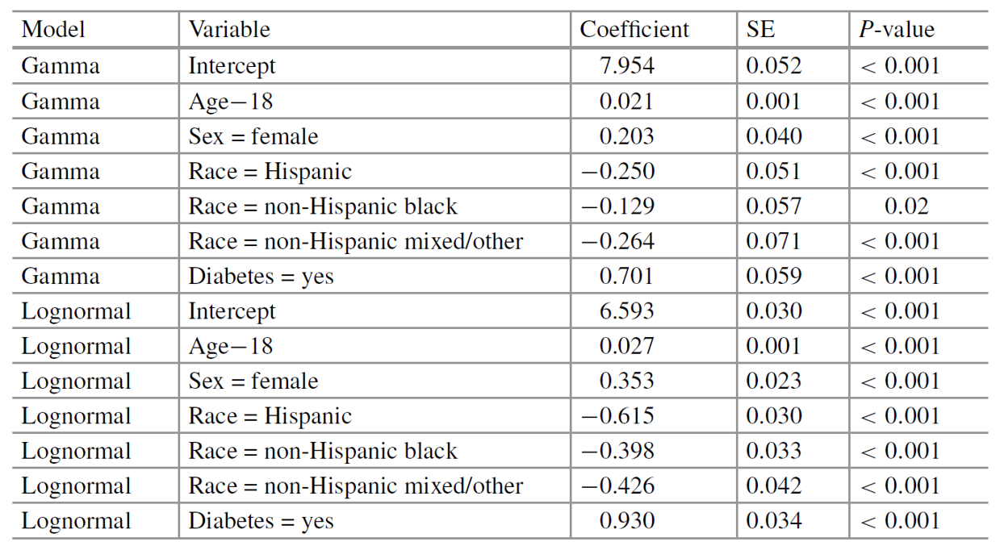

Chapter 3 Medical Cost Data Analysis
3.1 health care cost
- Health care cost: medical cost, direct medical cost, etc.
- There is no absolute concept of health care costs.
- When describing health care costs,
- various terms may be used such as charges, payments, expenditures …
- It may vary depending on the insurer and the setting
- Depending on perspectives: patient, payer, provider
- When describing health care costs,
- The closest approximation to a health care cost
- Total expenditures associated with the service, for a given patient in a given health care setting and with a given payer
- The sum of the insurance payment, the out-of-pocket amount, and any expenses associated with the health plan

Health care cost - NHIS claims data

- Almost of health care cost do not follow normal distribution.
- Not symmetric and bell shape
- Right-skewed
- Not symmetric and bell shape

- Skewed data
- The mean is not always the best descriptive measure.
- The median might be better than the mean.
- Median is not sensitive to extreme values.
- The log of the median is also the median of the log cost.
- Given the heterogeneity of health care expenditures, the predictors and correlates of these expenditures are of great interest.
- Extremely non-normal nature of cost outcomes means that standard linear regression analyses may not be appropriate for inference.
 Felix, J., Andreozzi, V., Soares, M., Borrego, P., Gervasio, H., Moreira, A., . . . Portuguese Group for the Study of Bone, M. (2011). Hospital resource utilization and treatment cost of skeletal-related events in patients with metastatic breast or prostate cancer: estimation for the Portuguese National Health System. Value Health, 14(4), 499-505. doi:10.1016/j.jval.2010.11.014
Felix, J., Andreozzi, V., Soares, M., Borrego, P., Gervasio, H., Moreira, A., . . . Portuguese Group for the Study of Bone, M. (2011). Hospital resource utilization and treatment cost of skeletal-related events in patients with metastatic breast or prostate cancer: estimation for the Portuguese National Health System. Value Health, 14(4), 499-505. doi:10.1016/j.jval.2010.11.014
 Leibson et al. (2020). Objective estimates of direct-medical costs among persons aged 3 to 38 years with and without research-defined autism spectrum disorder ascertained during childhood: A population-based birth-cohort study. Value Health, 23(5): 494-605.
 Chaikledkaew et al. (2008). Factors affecting health-care costs and hospitalizations among diabetic patients in Thai public hospitals. International Society for Pharmacoeconomics and Outcomes Research (ISPOR), 1098-3015/08/S69 S69-S74.
Chaikledkaew et al. (2008). Factors affecting health-care costs and hospitalizations among diabetic patients in Thai public hospitals. International Society for Pharmacoeconomics and Outcomes Research (ISPOR), 1098-3015/08/S69 S69-S74.
 Schneider, P. P., Ramaekers, B. L., Pouwels, X., Geurts, S., Ibragimova, K., de Boer, M., . . . Joore, M. (2021). Direct Medical Costs of Advanced Breast Cancer Treatment: A Real-World Study in the Southeast of The Netherlands. Value Health, 24(5), 668-675. doi:10.1016/j.jval.2020.12.007
Schneider, P. P., Ramaekers, B. L., Pouwels, X., Geurts, S., Ibragimova, K., de Boer, M., . . . Joore, M. (2021). Direct Medical Costs of Advanced Breast Cancer Treatment: A Real-World Study in the Southeast of The Netherlands. Value Health, 24(5), 668-675. doi:10.1016/j.jval.2020.12.007
3.2 Regression analysis with log transformation
3.2.1 General linear model
The general linear model
\[y_i = \beta_0 + \beta_1 x_{1i} + \ldots + \beta_p x_{pi} + \epsilon_i\]
the response \(y_i\), \(i=1,\ldots ,n\) is modelled by a linear function
of explanatory variables \(x_j\), \(j=1 , \ldots , p\) plus an error
term.

Here general refers to the dependence on potentially more than one explanatory variable, v.s. the simple linear model: \[y_i = \beta_0 + \beta_1 x_i + \epsilon_i\]
The model is linear in the parameters, e.g. \[\begin{aligned} y_i &=& \beta_0 + \beta_1 x_1 + \beta_2 x_1^2 + \epsilon_i \\ y_i&=&\beta_0 + \beta_1 x_1x_2 + \beta_2 exp(x_2) +\epsilon_i \end{aligned}\] but not e.g. \[\begin{aligned} y_i &=& \beta_0 + \beta_1 x_1^{ \beta_2}+ \epsilon_i \\ y_i&=&\beta_0 exp(\beta_1 )x_1 +\epsilon_i \end{aligned}\]
We assume that the errors \(\epsilon_i\) are independent and identically distributed such that \[E[\epsilon_i]=0 \hskip5pt \text{and} \hskip5pt var[\epsilon_i]=\sigma^2\]
Typically we assume \[\epsilon_i \sim N(0 , \sigma^2 )\] as a basis for inference, e.g. t-tests on paramters.

3.2.2 Log cost regression model
- Classical approach for regression modeling of a right-skewed outcome on the positive real line
- Standard linear regression with the log-transformed outcome, log(Y)
- Motivation with highly skewed data
- Log transformation will make it normal.
- Or at least normal enough that linear regression is valid.
- The log transformation is a compressive function
- Applied to a set of positive numbers.
- It shrinks those at the higher end of the range more than those at the lower end.
- The inverse of the natural logarithm, the exponential transformation is a magnifying function.
- It stretches those at the higher end of the range more than those at the lower end.
- Standard linear regression with log of \(Y\) \[ log(Y) \sim N(\mu, \sigma^2) \]
In the case where \(Y\) is costs, \(log(Y)\) is the log of costs, \(\mu\) is the mean of log costs, and \(\sigma^2\) is the variance of log costs.
- In the regression setting with covariates \(X_1, \ldots, X_k\) the model is
\[ log(Y|X_1,\ldots,X_k) \sim N(\beta_0+\beta_1X_1+\cdots+\beta_kX_k, \sigma^2) \]
where \(\beta_0, \beta_1, \ldots, \beta_k\) are the regression coefficients the represent an intercept and the effects of a change in the corresponding covariate on the mean of \(log(Y)\).
- Regression model
\[ log(Y_i)=\beta_0+\beta_1X_{i1}+\cdots+\beta_kX_{ik}+\epsilon_i, \,\,\, \epsilon_i \sim N(0, \sigma^2) \]
Interpretation of \(\beta\)
- One-unit change in any of the covariates is associated with a constant change, \(\beta\), in the mean of the outcome, regardless of the actual value of the covariate.
The \(\beta\)s quantify the association between the covariates \(X\) and the mean of \(log(Y)\).
However, health care costs are not easily understood in log costs.
- Ideally we would like estimates of the effects of covariates on the mean of \(Y\). In short, when out model is for \(E[log(Y)]=\mu\), then what is \(E(Y)\)?
- It turns out that \(E(Y)\) is not simply \(exp(\mu)\), the inverse transformation of \(\mu\).
The mean of the lognormal random variable depends not only on the mean of the original random variable but also on its variance.
Formally, when \(E[log(Y)]=\mu\) and \(Var[log(Y)]=\sigma^2\), then
\[ E(Y)=exp(\mu+\frac{1}{2}\sigma^2)=exp(\mu)\times exp(\frac{1}{2}\sigma^2) \]
- The mean of \(Y\) is the exponentiated mean of \(log(Y)\) multiplied by a term that depends on the variance.
- The multiplicative term is always larger than 1, and it increases with the variance of the normally distributed \(log(Y)\).
Under Estimation problem!!!
- Example: Fitted linear regression of the log of medical expenditures

\[ log(Y)=\beta_0 + \beta_1 \times Diabetes + \epsilon \] * Fitted model
\[ log(expenditures)=7,386+1.230 \times Diabetes \]
Interpretation
- The mean of log expenditures increases by 1.230 (\(\beta_1\)) when \(X\) changes from 0 (no diabetes) to 1 (diabetes)
- In practical, the average expenditures with a prior diabetes diagnosis are exp(1.230)=3.42 (\(exp(\beta_1)\)) higher than the average medical expenditures without a prior diagnosis.
To obtain the implications of this model for the average medical expenditures, we can use \(E(Y)\) above.
When our model is \(log(Y|X) \sim N(\beta_0 +\beta_1X , \sigma^2)\) then
\[ E(Y|X)=exp(\beta_0+\beta_1X+\frac{1}{2}\sigma^2)=exp(\beta_0)\times exp(\beta_1X) \times exp(\frac{1}{2}\sigma^2) \]
- The variance is same between with \((X=1)\) and without \((X=0)\) a prior diabetes diagnosis
\[ \frac{E(Y|X=1)}{E(Y|X=0)}=exp(\beta_1) \]
- The variance is not the same across values of \(X\): heteroskedastic
\[ \frac{E(Y|X=1)}{E(Y|X=0)}=exp(\beta_1+\frac{1}{2}(\sigma_1^2-\sigma_0^2)) \]
Although a very useful framework, there are some situations where general linear models are not appropriate.
the range of \(Y\) is restricted (e.g. binary, count)
the variance of \(Y\) depends on the mean
Non-normality with continuous variable
Generalized linear models (GLMs) extend the range of application of general linear models by accommodating response variables with non-normal conditional distribution to address both of these issues.
Except for the error, the right-hand side of a generalized linear model is essentially the same as for a general linear model.
3.3 Gamma generalized Linear Models
3.3.1 Generalized linear models (GLMs)
- A generalized linear model consists of three components:
- Random component : specifying the conditional distribution of the response variable, \(Y_i\), given the explanatory variables.
- Traditionally, the random component is a member of an "exponential family" - the normal (Gaussian), binomial, Poisson, gamma, or inverse-Gaussian families of distributions - but generalized linear models have been extended beyond the exponential families.
- Systematic component : A linear function of the regressors, called the linear predictor, \[\eta_i = \beta_0 + \beta_1 x_{1i} + \ldots + \beta_p x_{pi}\] on which the expected value \(\mu_i\) of \(Y_i\) depends.
- The \(X\)’s may include quantitative predictors, but they may also include transformations of predictors, polynomial terms, contrasts generated from factors, interaction regressors, etc.
- Link function : an invertible link function which transforms the expectation of the response to the linear predictor.
A link function that describes how the mean, \(E(Y_i )=\mu_i\), depends on the linear predictor \[g(\mu_i )=\eta_i\]
The inverse of the link function is sometimes called the mean function : \(g^{-1}(\eta_i )=\mu_i\).
A variance function that describes how the variance, \(var(Y_i )\) depends on the mean \(var(Y_i )=\phi V(\mu_i)\) where the dispersion parameter \(\phi\) is a constant.
The generalized linear model
\[g(\mu_i) = \beta_0 + \beta_1 x_{1i} + \ldots + \beta_p x_{pi}\] where \(g(\cdot)\) is the link function, \(\mu_i\) is the expectation of random component \(Y_i\) and explanatory variables \(x_j\), \(j=1 , \ldots , p\) .
Example of GLMs
Normal distribution with identity link function: Normal GLM
\[ E(Y_i | X)=\mu_i = \beta_0 + \beta_1 x_{1i} + \ldots + \beta_p x_{pi}\]
Binomial distribution with logit link function: Logistic regression model {-}
\[log(\frac{\mu_i}{1-\mu_i})= \beta_0 + \beta_1 x_{1i} + \ldots + \beta_p x_{pi}\]
Poisson distribution with log link function: Poisson GLMs
\[log(\mu_i)= \beta_0 + \beta_1 x_{1i} + \ldots + \beta_p x_{pi}\]
Gamma distribution with log link function: Gamma GLMs
\[log(\mu_i)= \beta_0 + \beta_1 x_{1i} + \ldots + \beta_p x_{pi}\]
3.3.2 Gamma generalized linear models
- The log cost model has traditionally been a staple for estimating the mean of right-skewed costs.
- Potential for heteroskedasticity and the resulting retransformation issues limit its practical application.
- One would model a cost outcome directly, in a way that avoids logging the cost.
- The model should ideally allow for the variance to increase with the mean, as might be expected for health cost outcomes.
- And the effects of covariates on the outcome should be readily interpretable.
- The gamma generalized linear model (GLM) with a log link satisfies all these requirements.
- The gamma distribution is a flexible distribution on the positive real line.
- Gamma distribution with parameters \(\alpha\) and \(\beta\)

- The “log link” means that the model relates the log of the mean to the linear predictors.
\[ log[E(Y)]=\beta_0+\beta_1X_1+\cdots+\beta_kX_k \]
- Or equivalently
\[ E(Y)=exp(\beta_0+\beta_1X_1+\cdots+\beta_kX_k)=exp(\beta_0)\times exp(\beta_1X_1)\times \cdots \times exp(\beta_kX_k) \]
- Interpretation: if \(X_j\) is a binary covariate then
\[ \frac{E(Y|X_j=1)}{E(Y|X_j=0)}=\exp(\beta_j) \]
This interpretation applies for any one-unit change in \(X_j\) if it is a continuous covariate.
Example: Fitted gamma GLMs of the expenditures

\[ log(\mu)=\beta_0+\beta_1 \times Age-18 \]
- Fitted model
\[ log(mean \,\,\, expenditures)=7.954+0.021\times Age \]
- Interpretation
- The log mean of expenditures increases by 0.021 (\(\beta_1\)) when \(X\) changes from 0 (under age 18) to 1 (over age 18)
- The average expenditures with a over 18 years old are exp(0.021)=1.02 (\(exp(\beta_1)\)) higher than the average medical expenditures with under 18 years old.
- Comparison betwen gamma GLM and linear regression of the log of cost

3.4 Transformation vs. GLMs
In some situations a response variable can be transformed to improve linearity and homogeneity of variance so that a general linear model can be applied.
This approach has some drawbacks
Response variable has changed!
Transformation must simultaneously improve linearity and homogeneity of variance
Transformation may not be defined on the boundaries of the sample space
For example, a common remedy for the variance increasing with the mean is to apply the log transform. e.g. \[log(y_i)=\beta_0 +\beta_1 x_1 +\epsilon_i\] \[\Rightarrow E(logY_i )=\beta_0 +\beta_1x_1\]
This is a linear model for the mean of \(logY\) which may not always be appropriate.
If \(Y\) is income perhaps, we are really interested in the mean income of population subgroups, in which case it would be better to model \(E(Y)\) using a GLMs: \[logE(Y_i)=\beta_0 +\beta_1x_1\] with \(V(\mu )=\mu\). This also avoids difficulties with \(y=0\).
3.5 Appendix
3.5.1 Exponential Family
Most of the commonly used statistical distributions, e.g. Normal, Binomial and Poisson, are members of the exponential family of distributions whose densities can be written in the form \[f(y; \theta, \phi )=exp \left ( \frac{y\theta-b(\theta)}{\phi}+c(y,\phi) \right)\] where \(\phi\) is the dispersion parameter and \(\theta\) is the canonical parameter.
It can be shown that \[\begin{aligned} E(Y) &=& b'(\theta) = \mu \\ var(Y)&=&\phi b''(\theta)=\phi V(\mu) \end{aligned}\]
3.5.2 Canonical Links
For a GLMs where the response follows an exponential distribution we have \[g(\mu_i )=g(b'(\theta_i ))=\beta_0 +\beta_1 x_{1i} + \ldots + \beta_p x_{pi}\]
The canonical link is defined as \[\begin{aligned} g&=&(b')^{-1} \\ \Rightarrow g(\mu_i )&=&\theta_i = \beta_o + \beta_1 x_{1i}+ \ldots + \beta_p x_{pi} \end{aligned}\]
Canonical links lead to desirable statistical properties of the GLMs hence tend to be used by default.
However there is no a priori reason why the systematic effects in the model should be additive on the scale given by this link.
3.5.3 Estimation of the Model Parameters
A single algorithm can be used to estimate the parameters of an exponential family GLMs using maximum likelihood.
The log-likelihood for the sample \(y_1, \ldots , y_n\) is \[l=\sum_{i=1}^n \frac{y_i\theta_i - b(\theta_i )}{\phi_i}+c(y_i , \phi_i )\]
The maximum likelihood estimates are obtained by solving the score equations \[s(\beta_j )=\frac{\partial l}{\partial\beta_j} =\sum_{i=1}^n \frac{a_i(y_i -\mu_i)}{ V(\mu_i )}\times \frac{x_{ij}}{g'(\mu_i )}=0\] Here \(\phi_i = \phi/a_i\) where \(\phi\) is a single dispersion parameter and \(a_i\) are known prior weights.
By the Fisher’s scoring method, the solution can be written as \[\mathbf{\beta}^{(r+1)} = (\mathbf{X}^T \mathbf{W}^{(r)} \mathbf{X})^{-1} \mathbf{X}^T \mathbf{W}^{(r)} \mathbf{z}^{(r)}\]
i.e. the score equations for a weighted least squares regression of \(\mathbf{z}^{(r)}\) on \(\mathbf{X}\) with weights \(\mathbf{W}^{(r)}=diag(w_i )\), where \[\begin{aligned} z_i^{(r)} &=& \eta_i^{(r)} + (y_i - \mu_i^{(r)} )g' (\mu_i^{(r)}) \\ \text{and} \quad w_i^{(r)}&=&\frac{a_i}{V(\mu_i^{(r)})(g'(\mu_i^{(r)}))^2} \end{aligned}\]
The estimates can be found using an Iteratively (Re-)Weighted Least Squares (IRLS) algorithm
Start with initial estimates \(\mu_i^{(r)}\)
Calculate working responses \(z_i^{(r)}\) and working weights \(w_i^{(r)}\)
Calculate \(\mathbf{\beta}^{(r+1)}\) by weighted least squares
Repeat 2 and 3 till convergence
For models with the canonical link, this is simply the Newton-Raphson method.